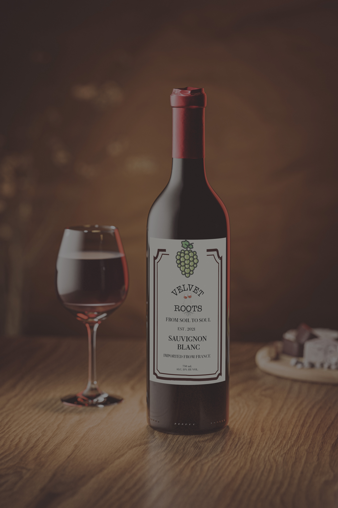

02
Process & Sketches
Early concepts, sketches, and exploration before the final direction.


An editorial-driven wine brand campaign about place, people, and slow storytelling — built around earthy textures and a quiet, romantic colour story.

What the project set out to do, and the story behind the brand.
From Soil to Soul and velvet roots is a wine label branding campaign built around the idea of slow storytelling — the relationship between the land, the people who tend it, and the bottle that carries that story forward. The goal was to design a brand identity and editorial layout that felt warm, tactile, and unhurried, avoiding the polished, corporate feel common in the category.
Early concepts, sketches, and exploration before the final direction.
The finished brand identity and editorial design.